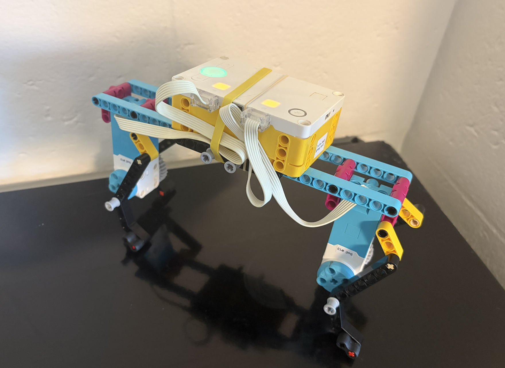
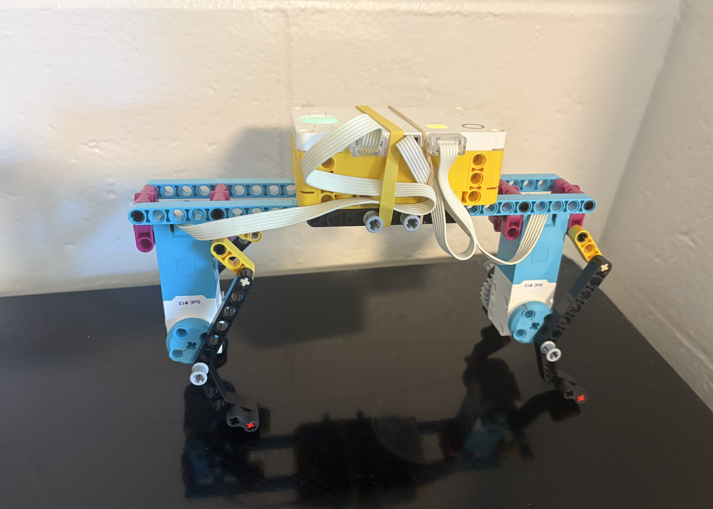
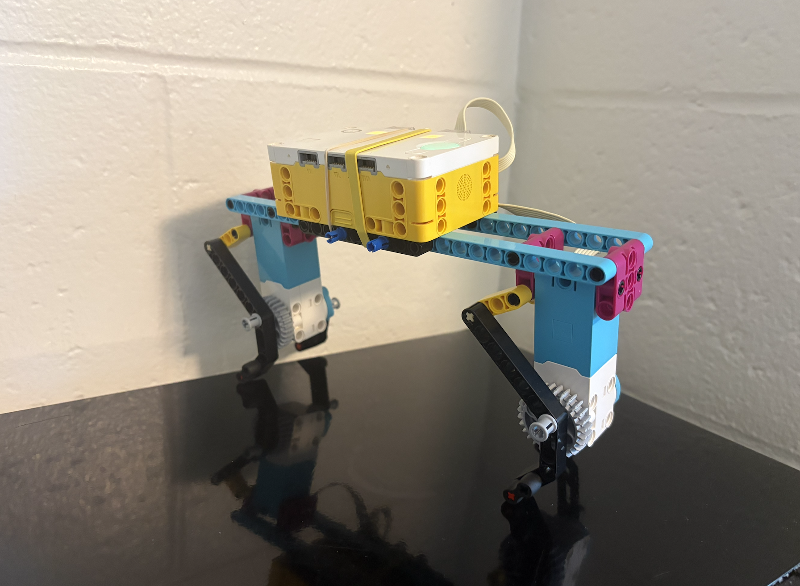

For this project, I explored the concept of biomimicry by creating a robot that mimics the movement of a corgi or dachshund dog. I thought that these dogs would be fun to recreate as they waddle more like a penguin then they walk. I used the two medium motors to create my robot. I also rubberbanded the hub onto the long body of the robot because it helped with the balance of it and putting it below made the hub occasionally hit the ground, which was not ideal.